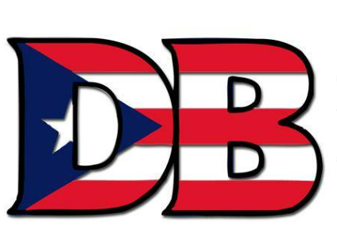

About DB Yale
Our Mission
Despierta Boricua exists as Yale's Puerto Rican cultural group to elevate, empower, and unite the Puerto Rican community—celebrating our rich heritage, confronting injustice, and crafting a future where our voices are heard and our dignity is upheld.
Our History
Despierta Boricua (DB) was founded in 1971 by Puerto Rican students at Yale University. The founders included Eduardo Padró, Manuel Del Valle, Cruz Ramos, Gilberto "Gilbert" Casellas, and Hector Medina. These men were working-class, (mostly) New York-based Puerto Rican men who were committed to advocating for the needs of Puerto Rican students at Yale and for the Puerto Rican community in New Haven.
DB's initial focus was on increasing the number of mainland Puerto Rican students at Yale. At the time, the majority of Puerto Rican students at Yale came from the island of Puerto Rico and were from upper-class backgrounds.  DB believed that it was important to increase the representation of mainland Puerto Ricans, who were more likely to be working-class and from public school backgrounds. In addition to their work on admissions, DB also advocated for the establishment of a Puerto Rican studies program at Yale. They believed that it was important for Puerto Rican students to have the opportunity to learn about their history and culture. DB also sought to create an inter-Ivy League network of Puerto Rican students and establish a Puerto Rican cultural center at Yale.
DB's activism was successful in increasing the number of mainland Puerto Rican students at Yale and in raising awareness of the needs of Puerto Rican students and the Puerto Rican community. DB also helped to create a more inclusive environment for all students at Yale.
DB is still active today and continues to advocate for the needs of Puerto Rican students at Yale and for the Puerto Rican community.
History brought to you by Amanda Rivera, Yale University, Dissertation in Progress, 2024
Julia de Burgos & La Casa Cultural


Julia de Burgos and the purple flag symbolizing feminist resistance
Poet, Feminist, Revolutionary
Yale's La Casa Cultural center is dedicated to the legacy of Julia de Burgos (1914-1953), one of Puerto Rico's most celebrated poets and an enduring symbol of Puerto Rican identity and feminist thought. Her revolutionary voice continues to inspire movements for justice and equality.
Born in Carolina, Puerto Rico, Julia de Burgos broke boundaries through her poetry that explored themes of feminism, social justice, and national identity. She wrote boldly about women's liberation long before the feminist movements of the 1960s and 70s, making her a pioneer whose words resonate with contemporary struggles.
The purple Puerto Rican flag represents this ongoing feminist struggle. Just as Julia challenged patriarchal norms in her writing and life, the purple flag reimagines traditional national symbols to center women's experiences, particularly highlighting the crisis of gender-based violence in Puerto Rico.
"I wanted to be like men wanted me to be: an attempt at life; a game of hide and seek with my being. But I was made of nows."
La Casa Cultural: A Home for Resistance and Celebration
Established in 1974, La Casa Cultural Julia de Burgos serves as both a cultural center and a space for activism. By naming our center after a feminist poet who challenged colonial and patriarchal power, Yale's Puerto Rican and Latino community affirms our commitment to the values she embodied.
Today, La Casa at 301 Crown Street continues Julia's legacy by fostering dialogue about gender justice and cultural identity. It stands as a space where women's resistance, dignity, and power is honored through programming, community building, and artistic expression.
Our Founders

Eduardo Padró
Co-founder, 1971

Manuel Del Valle
Co-founder, 1971

Gilberto Casellas
Co-founder, 1971
Cruz Ramos
Co-founder, 1971
Hector Medina
Co-founder, 1971
Our Values
Community
Building strong connections within the Yale Puerto Rican community and beyond.
Justice
Advocating for social and political equity for Puerto Ricans and all marginalized groups.
Education
Promoting knowledge and understanding of Puerto Rican history, culture, and current issues.
Activism
Taking meaningful action to create positive change both on campus and in wider society.
Cultural Experience
"La brega" is a uniquely Puerto Rican concept that embodies resourcefulness, resilience, and the ability to navigate life's challenges with creativity. It's an essential part of Puerto Rican cultural identity, especially in the face of adversity.
Join Our Community
Be part of our ongoing mission to elevate Puerto Rican voices and create meaningful change.